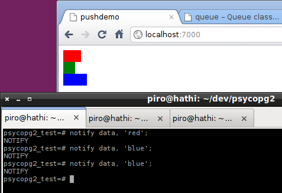

PostgreSQL notifications with Psycopg2 and Eventlet
Posted by Daniele Varrazzo on 2010-12-01
Tagged as
recipe,
async,
eventlet,
notify
PostgreSQL supports asynchronous notifications, a simple messaging system allowing clients to be notified about events occurred in the database. Notifications can be sent by any session using a "NOTIFY channel" command and will be received by any session which has subscribed with a LISTEN channel to receive updates. The system has been greatly improved in PostgreSQL 9.0 with the addition of a message payload, making the feature even more useful. Previously a typical use case would have been to notify interested sessions that a certain table was updated: now it is possible to signal for instance which record was changed. You can put the NOTIFY command in a database trigger for automatic notifications on insert or update... the possibilities are actually quite interesting.
Psycopg2 allows a client program to receive notifications from the database backend. Starting from version 2.3 the notification received will also include the payload, when connected to a PostgreSQL 9.0 server. The notification are received automatically after each query and are made available in the notifies attribute of the connection. They are also received using the poll() method, without the need of issuing queries only to receive notifications.
But polling a connection is not the most efficient nor timely way to receive notifications: a better approach is to ask the OS to wake us up when there is something to read on the connection socket. This approach is particularly appealing when using an event-driven framework such as Twisted or Eventlet, with which is easy to perform other tasks while there is nothing to read on the connection. In "regular" Python programs it is possible to use select() to block until a notification arrives (see the documentation for an example): this would block the entire program. If some concurrency is required it is possible to use the blocking syscall in a thread to allow the rest of the program to carry on.
Eventlet example
This example shows how hook the notifications system into Eventlet: using it with a WebSocket it is possible to send an event from the database to the application and up to a web browser, all in push mode! The example requires PostgreSQL 9.0 and Psycopg 2.3 as it uses notification payloads.
This function handles a WebSocket connection in a green thread: it creates a Queue and opens a database connection (calling the dblisten() function), then blocks on the queue waiting to receive notifications: as soon as any is received, its payload is forwarded to the browser. This is obviously just an example: a database connection for every browser wouldn't scale very much...
import eventlet from eventlet import wsgi from eventlet import websocket @websocket.WebSocketWSGI def handle(ws): """ Receive a connection and send it database notifications. """ q = eventlet.Queue() eventlet.spawn(dblisten, q) while 1: n = q.get() print n ws.send(n.payload)
When handle() blocks on the queue the control of the program switches to a different green thread, allowing the rest of the program to keep on running even if single-threaded.
The dblisten function sets up the listening database connection:
import psycopg2 from psycopg2.extensions import ISOLATION_LEVEL_AUTOCOMMIT from eventlet.hubs import trampoline def dblisten(q): """ Open a db connection and add notifications to *q*. """ cnn = psycopg2.connect(dsn) cnn.set_isolation_level(ISOLATION_LEVEL_AUTOCOMMIT) cur = cnn.cursor() cur.execute("LISTEN data;") while 1: trampoline(cnn, read=True) cnn.poll() while cnn.notifies: n = cnn.notifies.pop() q.put(n)
The connection is set in autocommit mode, otherwise the notification would be postponed until the end of the transaction. The trampoline is the Eventlet function that schedules a green thread switch: we ask it to return us the control when the file descriptor underlying the connection will have something to read. Once the system wakes up again we use poll() to parse eventual notifications received, that will be added to the queue and thus passed to the client.
The rest of the example is not shown here: it only consists in a static page and the web server setup. You can download the complete example.
Running the program and opening the page http://localhost:7000/ in a WebSocket-enabled browser you will see a page with three coloured bars: using a command such as NOTIFY data, 'green' in a psql shell, one of the bars in the page will be updated accordingly. Here is a screenshot:
